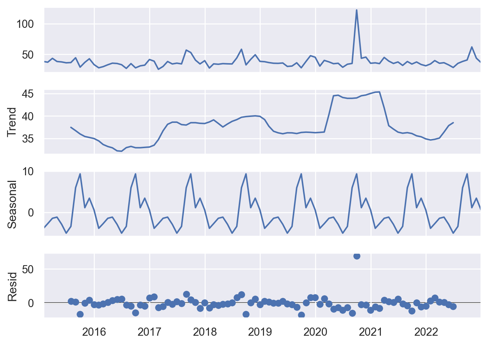
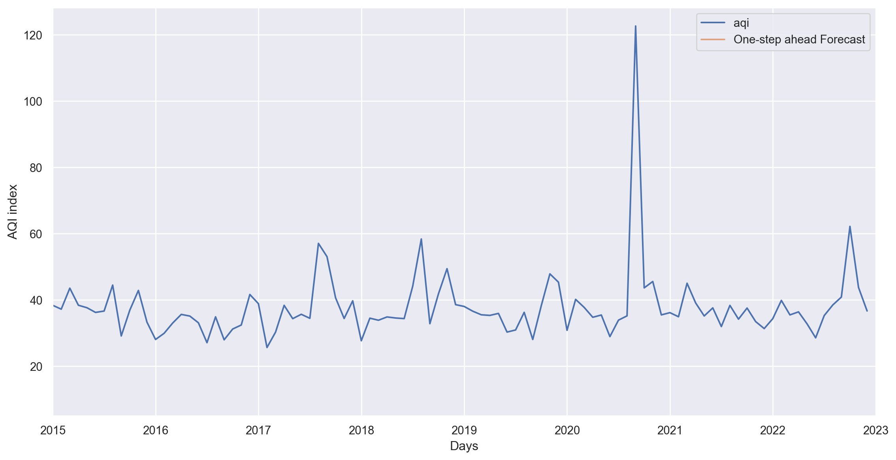
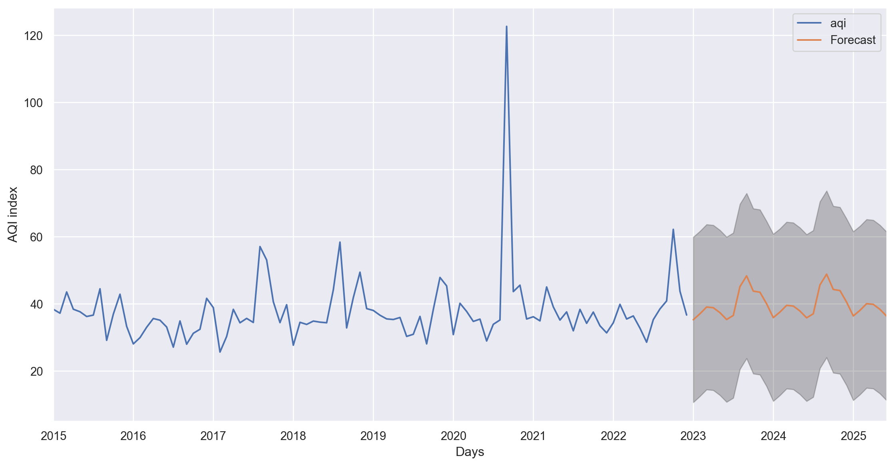

import statsmodels.api as sm
import matplotlib.pyplot as plt
import seaborn as sns
import numpy as np
import pandas as pdResults Machine Learning SARIMAX
import pandas as pd
df = pd.read_pickle('/data/df.pkl')sns.set_theme(style="darkgrid")
df_aqi = df[['date','aqi']]
df_aqi = df_aqi.set_index('date')
df_aqi = df_aqi.resample('ME').mean()
df_aqi.ffill(inplace=True)
#df_aqi.plot(figsize=(15,8))Any time series is decomposed of two things:
- Seasonality
- Trends
By the help of statsmodel package we can break the time series into its seasonal pattern and trends. This will helps us to understand the data clearly and will help us to make more sense of the data.
Decomposing the Time Series With Additive Method
sns.set_theme(style="darkgrid")
decomposition = sm.tsa.seasonal_decompose(df_aqi, model='additive')
fig = decomposition.plot()
plt.show()
There are three components to a time series:
Trend: Trend tells you how things are overall changing
Seasonality: Seasonality shows you how things change within a given period (e.g. year,month, week, day)
Residual: The Error/residual/irregular activity are the anomalies whitch cannot be explained by the trend or the seasonal value
In a additive time series, the components add together to make the time series. If you have an increasing trend, you still see roughly the same size peaks and troughs throughout the time series. This is often seen in indexed time series where the absolute value is growing but changes stay relative.
Time Series Prediction
For this project, we have used an extended version of ARIMA model knows as SARIMAX model as we have explained in the methods section. The SARIMAX model is used when the data sets have seasonal cycles. In our dataset concerning air quality/AQI there is a seasonal pattern which we can see in the above visualization.
We need to find the right p,d and q parameters to correctly forecast and predict the AQI value.
- p is the auto-regressive part of the model. It allows us to incorporate the effect of past values into our model.
- d is the integrated part of the model. This includes terms in the model that incorporate the amount of diferencing (the number of past time points to subtract from the current value) to apply the time series.
- q is the moving average part of the model. This allows us to set the error of our model as a linear combination of the error values observed at previous time points in the past.
We use a tuning technique called grid search method that attempts to compute the optimum values of hyperparameters. We are trying to find the right p,d,q values that would be given as an input to the SARIMAX time series model.
import itertools
# Define the p, d, q parameters to take any value between 0 to 1
p = d = q = range(0, 2)
pdq = list(itertools.product(p, d, q)) # generate all possible combinations of p,d,q
# This creates combinations of seasonal parameters with a seasonality period of 12 (e.g., monthly data).
seasonal_pdq = [(x[0], x[1], x[2], 12) for x in pdq]
# Outer Loop: Iterates over all combinations of pdq.
# Inner Loop: Iterates over all combinations of seasonal_pdq.
# Try Block:
# Creates a SARIMAX model with the current combination of parameters.
# Fits the model to the data.
# Prints the AIC (Akaike Information Criterion) for the model, which is a measure of model quality.
# Except Block:
# Catches and prints any errors that occur during model fitting, allowing the loop to continue with the next set of parameters.
for param in pdq:
for param_seasonal in seasonal_pdq:
try:
mod = sm.tsa.statespace.SARIMAX(df_aqi,
order=param,
seasonal_order=param_seasonal,
enforce_stationarity=False,
enforce_invertibility=False)
results = mod.fit()
print('ARIMA{}x{} - AIC:{}'.format(param, param_seasonal, results.aic))
except Exception as e:
print(f"Error with parameters {param} and {param_seasonal}: {e}")
continueARIMA(0, 0, 0)x(0, 0, 0, 12) - AIC:969.5419650946665
ARIMA(0, 0, 0)x(0, 0, 1, 12) - AIC:799.0140026908043
ARIMA(0, 0, 0)x(0, 1, 0, 12) - AIC:701.7072455506197
ARIMA(0, 0, 0)x(0, 1, 1, 12) - AIC:568.3211239351035
ARIMA(0, 0, 0)x(1, 0, 0, 12) - AIC:708.2727189545345
ARIMA(0, 0, 0)x(1, 0, 1, 12) - AIC:660.9171130206936
ARIMA(0, 0, 0)x(1, 1, 0, 12) - AIC:596.1563221105039
ARIMA(0, 0, 0)x(1, 1, 1, 12) - AIC:571.8620221843147
ARIMA(0, 0, 1)x(0, 0, 0, 12) - AIC:888.4893265461405
ARIMA(0, 0, 1)x(0, 0, 1, 12) - AIC:754.7451219152275
ARIMA(0, 0, 1)x(0, 1, 0, 12) - AIC:695.0468020327725
ARIMA(0, 0, 1)x(0, 1, 1, 12) - AIC:563.3526496700842
ARIMA(0, 0, 1)x(1, 0, 0, 12) - AIC:708.3487691701486
ARIMA(0, 0, 1)x(1, 0, 1, 12) - AIC:655.8968840891383
ARIMA(0, 0, 1)x(1, 1, 0, 12) - AIC:598.1490374699148
ARIMA(0, 0, 1)x(1, 1, 1, 12) - AIC:566.3367865157978
ARIMA(0, 1, 0)x(0, 0, 0, 12) - AIC:769.1876196189784
ARIMA(0, 1, 0)x(0, 0, 1, 12) - AIC:681.4253047727481
ARIMA(0, 1, 0)x(0, 1, 0, 12) - AIC:740.3973501203114
ARIMA(0, 1, 0)x(0, 1, 1, 12) - AIC:606.0067883430007
ARIMA(0, 1, 0)x(1, 0, 0, 12) - AIC:688.9276375883021
ARIMA(0, 1, 0)x(1, 0, 1, 12) - AIC:683.2372837276466
ARIMA(0, 1, 0)x(1, 1, 0, 12) - AIC:637.9760649104885
ARIMA(0, 1, 0)x(1, 1, 1, 12) - AIC:607.9989487123431
ARIMA(0, 1, 1)x(0, 0, 0, 12) - AIC:717.0512101206406
ARIMA(0, 1, 1)x(0, 0, 1, 12) - AIC:636.373429528529
ARIMA(0, 1, 1)x(0, 1, 0, 12) - AIC:692.512410906277
ARIMA(0, 1, 1)x(0, 1, 1, 12) - AIC:559.6920424480529
ARIMA(0, 1, 1)x(1, 0, 0, 12) - AIC:650.5293595230056
ARIMA(0, 1, 1)x(1, 0, 1, 12) - AIC:638.1908637932411
ARIMA(0, 1, 1)x(1, 1, 0, 12) - AIC:594.940391452659
ARIMA(0, 1, 1)x(1, 1, 1, 12) - AIC:562.5484300875305
ARIMA(1, 0, 0)x(0, 0, 0, 12) - AIC:775.150570595756
ARIMA(1, 0, 0)x(0, 0, 1, 12) - AIC:688.1982167211085
ARIMA(1, 0, 0)x(0, 1, 0, 12) - AIC:702.425519762607
ARIMA(1, 0, 0)x(0, 1, 1, 12) - AIC:570.1689904036024
ARIMA(1, 0, 0)x(1, 0, 0, 12) - AIC:688.2931195730088
ARIMA(1, 0, 0)x(1, 0, 1, 12) - AIC:662.6749372683774
ARIMA(1, 0, 0)x(1, 1, 0, 12) - AIC:590.7883988000217
ARIMA(1, 0, 0)x(1, 1, 1, 12) - AIC:573.825547011459
ARIMA(1, 0, 1)x(0, 0, 0, 12) - AIC:725.2611476282008
ARIMA(1, 0, 1)x(0, 0, 1, 12) - AIC:644.4595774810737
ARIMA(1, 0, 1)x(0, 1, 0, 12) - AIC:696.6355146715679
ARIMA(1, 0, 1)x(0, 1, 1, 12) - AIC:565.337721591011
ARIMA(1, 0, 1)x(1, 0, 0, 12) - AIC:651.3742765976529
ARIMA(1, 0, 1)x(1, 0, 1, 12) - AIC:657.7255114881699
ARIMA(1, 0, 1)x(1, 1, 0, 12) - AIC:592.7702867201957
ARIMA(1, 0, 1)x(1, 1, 1, 12) - AIC:567.3861300859227
ARIMA(1, 1, 0)x(0, 0, 0, 12) - AIC:750.4532664961456
ARIMA(1, 1, 0)x(0, 0, 1, 12) - AIC:665.693748389872
ARIMA(1, 1, 0)x(0, 1, 0, 12) - AIC:720.7807876037391
ARIMA(1, 1, 0)x(0, 1, 1, 12) - AIC:588.6301637485213
ARIMA(1, 1, 0)x(1, 0, 0, 12) - AIC:665.7141239363682
ARIMA(1, 1, 0)x(1, 0, 1, 12) - AIC:667.6890275833365
ARIMA(1, 1, 0)x(1, 1, 0, 12) - AIC:611.4437482645567
ARIMA(1, 1, 0)x(1, 1, 1, 12) - AIC:590.6185673644065
ARIMA(1, 1, 1)x(0, 0, 0, 12) - AIC:717.3211552781574
ARIMA(1, 1, 1)x(0, 0, 1, 12) - AIC:636.7110296932944
ARIMA(1, 1, 1)x(0, 1, 0, 12) - AIC:693.1696490581699
ARIMA(1, 1, 1)x(0, 1, 1, 12) - AIC:561.5301944999834
ARIMA(1, 1, 1)x(1, 0, 0, 12) - AIC:643.9735168529521
ARIMA(1, 1, 1)x(1, 0, 1, 12) - AIC:638.640931561371
ARIMA(1, 1, 1)x(1, 1, 0, 12) - AIC:588.5992832053371
ARIMA(1, 1, 1)x(1, 1, 1, 12) - AIC:564.5468753697722We have to find the lowest AIC values which would have the best corresponding p,d,q values to have the best forecast of AQI values.
Summary of SARIMAX
Print the summary which includes AIC
mod = sm.tsa.statespace.SARIMAX(df_aqi,order=(1, 1, 1),seasonal_order=(0,1, 1, 12),enforce_stationarity=False,enforce_invertibility=False)
results = mod.fit()
print(results.summary().tables[1])==============================================================================
coef std err z P>|z| [0.025 0.975]
------------------------------------------------------------------------------
ar.L1 0.0483 0.306 0.158 0.875 -0.551 0.648
ma.L1 -1.0000 924.523 -0.001 0.999 -1813.031 1811.031
ma.S.L12 -1.0000 2355.498 -0.000 1.000 -4617.692 4615.692
sigma2 134.1503 3.35e+05 0.000 1.000 -6.57e+05 6.57e+05
==============================================================================How Fit the SARIMAX model
Plot Diagnostics
aic_value = results.aic
print(f"The AIC value is: {aic_value}")The AIC value is: 561.5301944999834#results.plot_diagnostics(figsize=(10, 8))
Train and Test
Rigorous validation is paramount to establishing the model’s reliability and practical application. To ensure the model’s generalizability, we will employ a train-test split. This approach safeguards against overfitting by exposing the model to unseen data, allowing for a more accurate assessment of its predictive capabilities.
By partitioning the dataset, we can:
- Evaluate performance: Measure the model’s accuracy on unseen data.
- Detect overfitting: Identify discrepancies between training and testing performance.
- Assess generalization: Determine the model’s ability to handle new data.
- Quantify reliability: Calculate confidence intervals for prediction accuracy.
- Iteratively improve: Use insights to refine the model.
This rigorous process underpins the credibility and utility of our research findings.
To split the data, we follow the recommended 70:30 ratio, 70% of the data is the training data, and 30% of the data is the testing data.
# Check the minimum date in the 'date' column
print(f"Start date of the data:", df_aqi.index.min())Start date of the data: 2015-01-31 00:00:00print(f"End date of the data:", df_aqi.index.max())End date of the data: 2022-12-31 00:00:00Once the model is created, predicted values are generated using the .get_prediction() method, with datetime as input
pred = results.get_prediction(start=pd.to_datetime('2023-01-01 00:00:00'), dynamic=False)
pred_ci = pred.conf_int()The graph indicates overlapping patterns in the testing and training data, suggesting strong potential for the forecasting model’s performance.
ax = df_aqi['2015-01-31 00:00:00':].plot(label='Observed') # plot the observed data
pred.predicted_mean.plot(ax=ax, label='One-step ahead Forecast', alpha=.7, figsize=(14, 7))
ax.fill_between(pred_ci.index,pred_ci.iloc[:, 0],pred_ci.iloc[:, 1], color='k', alpha=.2)
ax.set_xlabel('Days')
ax.set_ylabel('AQI index')
plt.legend()
plt.show()
To facilitate comparison of true and predicted test values, we will create a separate DataFrame. Mean Error Estimation will be used for analysis.
y_forecasted = pred.predicted_mean
y_truth = df_aqi['2022-12-31 00:00:00':]To evaluate model performance, we calculate the MSE
import numpy as np
from sklearn.metrics import mean_squared_error
mse = np.sqrt(mean_squared_error(y_truth, y_forecasted))
print('The Mean Squared Error of our forecasts is {}'.format(round(mse, 2)))The Mean Squared Error of our forecasts is 1.41Forecasting Future Values
As we conclude our modeling process, we generate predictions for the next 7 data points:
Model Information: The
resultvariable contains our fitted model’s details.Forecasting Method: We use the
.get_forecast()method on our model results.Prediction Generation: This method analyzes observed patterns in our data to project future values.
Output: We obtain forecasts for the next 30 time points, representing predicted air quality levels.
This step transforms our analytical work into actionable insights for air quality management.
pred_uc = results.get_forecast(steps=30)
pred_ci = pred_uc.conf_int()Forecasted Values with Dates
# Get the forecasted values
forecasted_values = pred_uc.predicted_mean
# Get the forecasted dates
forecasted_dates = forecasted_values.index
# Create a DataFrame with the dates and forecasted values
forecast_df = pd.DataFrame({
'Date': forecasted_dates,
'Forecasted Value': forecasted_values
})
# Print the DataFrame as a table
#print(forecast_df.head(30).to_markdown(index=False))| Date | Forecasted Value |
|---|---|
| 2023-01-31 00:00:00 | 35.2645 |
| 2023-02-28 00:00:00 | 37.048 |
| 2023-03-31 00:00:00 | 39.0529 |
| 2023-04-30 00:00:00 | 38.849 |
| 2023-05-31 00:00:00 | 37.3658 |
| 2023-06-30 00:00:00 | 35.3366 |
| 2023-07-31 00:00:00 | 36.5473 |
| 2023-08-31 00:00:00 | 45.1318 |
| 2023-09-30 00:00:00 | 48.3407 |
| 2023-10-31 00:00:00 | 43.7852 |
| 2023-11-30 00:00:00 | 43.4657 |
| 2023-12-31 00:00:00 | 40.0066 |
| 2024-01-31 00:00:00 | 35.8992 |
| 2024-02-29 00:00:00 | 37.5526 |
| 2024-03-31 00:00:00 | 39.5511 |
| 2024-04-30 00:00:00 | 39.3469 |
| 2024-05-31 00:00:00 | 37.8637 |
| 2024-06-30 00:00:00 | 35.8346 |
| 2024-07-31 00:00:00 | 37.0452 |
| 2024-08-31 00:00:00 | 45.6298 |
| 2024-09-30 00:00:00 | 48.8386 |
| 2024-10-31 00:00:00 | 44.2831 |
| 2024-11-30 00:00:00 | 43.9637 |
| 2024-12-31 00:00:00 | 40.5046 |
| 2025-01-31 00:00:00 | 36.3972 |
| 2025-02-28 00:00:00 | 38.0505 |
| 2025-03-31 00:00:00 | 40.0491 |
| 2025-04-30 00:00:00 | 39.8449 |
| 2025-05-31 00:00:00 | 38.3616 |
| 2025-06-30 00:00:00 | 36.3325 |
Visualizing Our Results: The Culmination of Our Analysis
The final and crucial step of our project is the creation of a comprehensive plot that encapsulates our complex analysis. This visualization serves as the key to understanding and interpreting our findings.
Interpreting the Forecast Plot
Our plot consists of several key elements:
- Observed Values (Blue Line)
- Represents the actual, historical air quality measurements
- Provides a baseline for comparing our predictions
- Forecasted Values (Orange Line)
- Depicts the future air quality levels predicted by our SARIMAX Time Series Model
- Allows us to visualize potential trends and patterns in air quality
- Confidence Interval (Shaded Region)
- The shaded area around the forecast line represents the 95% Confidence Interval (CI)
- Indicates the range within which we can be 95% confident that the true future values will fall
- Wider intervals suggest greater uncertainty in the prediction
This visual representation not only summarizes our extensive data analysis but also provides a powerful tool for understanding potential future air quality trends. It bridges the gap between complex statistical models and actionable insights, making our findings accessible and meaningful to a broader audience.
ax = df_aqi.plot(label='Observed', figsize=(14, 7))
pred_uc.predicted_mean.plot(ax=ax, label='Forecast')
ax.fill_between(pred_ci.index,pred_ci.iloc[:, 0],pred_ci.iloc[:, 1], color='k', alpha=.25)
ax.set_xlabel('Days')
ax.set_ylabel('AQI index')
plt.legend()
plt.show()